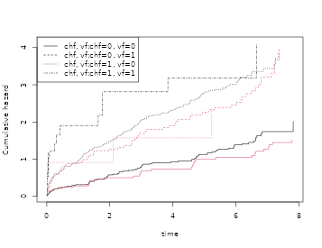
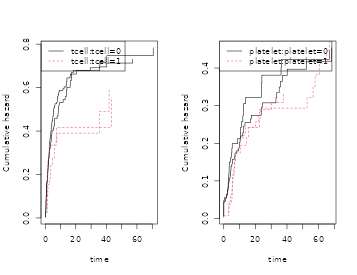
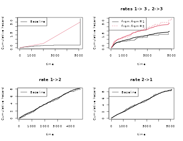
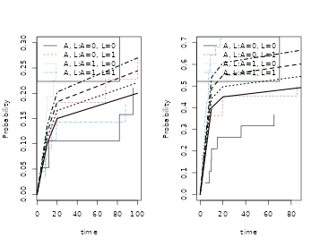
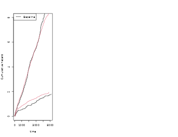
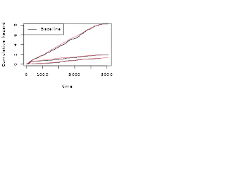
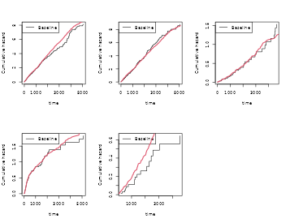

WIP: Cooking survival data, 5 minute recipes
2025-04-23
Source:vignettes/cooking-survival-data.Rmd
cooking-survival-data.RmdOverview
Simulation of survival data is important for both theoretical and practical work. In a practical setting we might wish to validate that standard errors are valid even in a rather small sample, or validate that a more complicated procedure is doing as intended. Therefore it is useful to have simple tools for generating survival data that looks as much as possible like particular data. In a theoretical setting we often are interested in evaluating the finite sample properties of a new procedure in different settings that often are motivated by a specific practical problem. The aim is provide such tools.
Bender et al. in a nice recent paper also discussed how to generate survival data based on the Cox model, and restricted attention to some of the many useful parametric survival models (weibull, exponential).
Different survival models can be cooked, and we here give recipes for hazard and cumulative incidence based simulations. More recipes are given in vignette about recurrent events.
- hazard based.
- cumulative incidence.
- recurrent events (see recurrent events vignette).
Hazard based, Cox models
Given a survival time with cumulative hazard , it follows that with (exponential with rate 1), that will have the same distribution as .
This provides the basis for simulations of survival times with a given hazard and is a consequence of this simple calculation
Similarly if given have hazard on Cox form where is a -dimensional regression coefficient and a baseline hazard funcion, then it is useful to observe also that with has the same distribution as given .
Therefore if the inverse of the cumulative hazard can be computed we can generate survival with a specified hazard function. One useful observation is note that for a piecewise linear continuous cumulative hazard on an interval it is easy to compute the inverse.
Further, we can approximate any cumulative hazard with a piecewise linear continous cumulative hazard and then simulate data according to this approximation. Recall that fitting the Cox model to data will give a piecewise constant cumulative hazard and the regression coefficients so with these at hand we can first approximate the piecewise constant “Breslow”-estimator with a linear upper (or lower bound) by simply connecting the values by straight lines.
Delayed entry
If
given
have hazard on Cox form
and we wish to generate data according
to this hazard for those that are alive at time
,
that is draw from the distribution of
given
(all given
), then we note that
with
and with
has the distributiion we are after.
This is again a consequence of a simple calculation
The engine is to simulate data with a given linear cumulative hazard.
nsim <- 200
chaz <- c(0,1,1.5,2,2.1)
breaks <- c(0,10, 20, 30, 40)
cumhaz <- cbind(breaks,chaz)
X <- rbinom(nsim,1,0.5)
beta <- 0.2
rrcox <- exp(X * beta)
pctime <- rchaz(cumhaz,n=nsim)
pctimecox <- rchaz(cumhaz,rrcox)Now we generate data that resemble Cox models for the bmt data
data(bmt);
cox1 <- phreg(Surv(time,cause==1)~tcell+platelet,data=bmt)
cox2 <- phreg(Surv(time,cause==2)~tcell+platelet,data=bmt)
X1 <- bmt[,c("tcell","platelet")]
n <- nsim
xid <- sample(1:nrow(X1),n,replace=TRUE)
Z1 <- X1[xid,]
Z2 <- X1[xid,]
rr1 <- exp(as.matrix(Z1) %*% cox1$coef)
rr2 <- exp(as.matrix(Z2) %*% cox2$coef)
d <- rcrisk(cox1$cum,cox2$cum,rr1,rr2)
dd <- cbind(d,Z1)
scox1 <- phreg(Surv(time,status==1)~tcell+platelet,data=dd)
scox2 <- phreg(Surv(time,status==2)~tcell+platelet,data=dd)
par(mfrow=c(1,2))
plot(cox1); plot(scox1,add=TRUE,col=2)
plot(cox2); plot(scox2,add=TRUE,col=2)
cbind(cox1$coef,scox1$coef,cox2$coef,scox2$coef)
#> [,1] [,2] [,3] [,4]
#> tcell -0.4232606 0.01031389 0.3991068 0.6726477
#> platelet -0.5654438 -1.04826712 -0.2461474 -0.7363505Now model with no covariates and specific call of sim.base function
data(sTRACE)
dtable(sTRACE,~chf+diabetes)
#>
#> diabetes 0 1
#> chf
#> 0 223 16
#> 1 230 31
coxs <- phreg(Surv(time,status==9)~strata(diabetes,chf),data=sTRACE)
strata <- sample(0:3,nsim,replace=TRUE)
simb <- sim.base(coxs$cumhaz,nsim,stratajump=coxs$strata.jumps,strata=strata)
cc <- phreg(Surv(time,status)~strata(strata),data=simb)
plot(coxs,col=1); plot(cc,add=TRUE,col=2)
More Cox games
cox <- survival::coxph(Surv(time,status==9)~vf+chf+wmi,data=sTRACE)
sim1 <- sim.cox(cox,nsim,data=sTRACE)
cc <- survival::coxph(Surv(time,status)~vf+chf+wmi,data=sim1)
cbind(cox$coef,cc$coef)
#> [,1] [,2]
#> vf 0.2970218 -0.7517229
#> chf 0.8018334 0.5057257
#> wmi -0.8920005 -1.2261934
cor(sim1[,c("vf","chf","wmi")])
#> vf chf wmi
#> vf 1.0000000 0.1376494 -0.1295427
#> chf 0.1376494 1.0000000 -0.3077879
#> wmi -0.1295427 -0.3077879 1.0000000
cor(sTRACE[,c("vf","chf","wmi")])
#> vf chf wmi
#> vf 1.00000000 0.1346711 -0.08966805
#> chf 0.13467109 1.0000000 -0.37464791
#> wmi -0.08966805 -0.3746479 1.00000000
cox <- phreg(Surv(time, status==9)~vf+chf+wmi,data=sTRACE)
sim3 <- sim.cox(cox,nsim,data=sTRACE)
cc <- phreg(Surv(time, status)~vf+chf+wmi,data=sim3)
cbind(cox$coef,cc$coef)
#> [,1] [,2]
#> vf 0.2970218 0.2963088
#> chf 0.8018334 0.8389057
#> wmi -0.8920005 -0.8798035
plot(cox,se=TRUE); plot(cc,add=TRUE,col=2)
coxs <- phreg(Surv(time,status==9)~strata(chf,vf)+wmi,data=sTRACE)
sim3 <- sim.phreg(coxs,nsim,data=sTRACE)
cc <- phreg(Surv(time, status)~strata(chf,vf)+wmi,data=sim3)
cbind(coxs$coef,cc$coef)
#> [,1] [,2]
#> wmi -0.8683355 -0.8091527
plot(coxs,col=1); plot(cc,add=TRUE,col=2)
More Cox games with cause specific hazards
data(bmt)
# coxph
cox1 <- survival::coxph(Surv(time,cause==1)~tcell+platelet,data=bmt)
cox2 <- survival::coxph(Surv(time,cause==2)~tcell+platelet,data=bmt)
coxs <- list(cox1,cox2)
dd <- sim.cause.cox(coxs,nsim,data=bmt)
scox1 <- survival::coxph(Surv(time,status==1)~tcell+platelet,data=dd)
scox2 <- survival::coxph(Surv(time,status==2)~tcell+platelet,data=dd)
cbind(cox1$coef,scox1$coef)
#> [,1] [,2]
#> tcell -0.4231551 -0.6451949
#> platelet -0.5646181 -0.5227571
cbind(cox2$coef,scox2$coef)
#> [,1] [,2]
#> tcell 0.3991911 0.43995438
#> platelet -0.2456203 -0.06619207Stratified Cox models using phreg
## stratified with phreg
cox0 <- phreg(Surv(time,cause==0)~tcell+platelet,data=bmt)
cox1 <- phreg(Surv(time,cause==1)~tcell+platelet,data=bmt)
cox2 <- phreg(Surv(time,cause==2)~strata(tcell)+platelet,data=bmt)
coxs <- list(cox0,cox1,cox2)
dd <- sim.cause.cox(coxs,nsim,data=bmt)
scox0 <- phreg(Surv(time,status==1)~tcell+platelet,data=dd)
scox1 <- phreg(Surv(time,status==2)~tcell+platelet,data=dd)
scox2 <- phreg(Surv(time,status==3)~strata(tcell)+platelet,data=dd)
cbind(cox0$coef,scox0$coef)
#> [,1] [,2]
#> tcell 0.1912407 0.09341160
#> platelet 0.1563789 0.02747202
cbind(cox1$coef,scox1$coef)
#> [,1] [,2]
#> tcell -0.4232606 -0.5166656
#> platelet -0.5654438 -0.3012561
cbind(cox2$coef,scox2$coef)
#> [,1] [,2]
#> platelet -0.2271912 0.08914999
par(mfrow=c(1,3))
plot(cox0); plot(scox0,add=TRUE,col=2);
plot(cox1); plot(scox1,add=TRUE,col=2);
plot(cox2); plot(scox2,add=TRUE,col=2); 
cox1 <- phreg(Surv(time,cause==1)~strata(tcell)+platelet,data=bmt)
cox2 <- phreg(Surv(time,cause==2)~tcell+strata(platelet),data=bmt)
coxs <- list(cox1,cox2)
dd <- sim.cause.cox(coxs,nsim,data=bmt)
scox1 <- phreg(Surv(time,status==1)~strata(tcell)+platelet,data=dd)
scox2 <- phreg(Surv(time,status==2)~tcell+strata(platelet),data=dd)
cbind(cox1$coef,scox1$coef)
#> [,1] [,2]
#> platelet -0.5658612 -0.3535558
cbind(cox2$coef,scox2$coef)
#> [,1] [,2]
#> tcell 0.4153706 0.7640276
par(mfrow=c(1,2))
plot(cox1); plot(scox1,add=TRUE);
plot(cox2); plot(scox2,add=TRUE); 
- sim.phreg only for phreg, but a bit more flexible, can deal with strata
- sim.cox can only deal with covariates that can be identified from the names of its coefficients (so factors should be coded accordingly) or use sim.phreg
library(mets)
n <- 100
data(bmt)
bmt$bmi <- rnorm(408)
dcut(bmt) <- gage~age
data <- bmt
cox1 <- phreg(Surv(time,cause==1)~strata(tcell)+platelet,data=bmt)
cox2 <- phreg(Surv(time,cause==2)~strata(gage)+tcell+platelet,data=bmt)
cox3 <- phreg(Surv(time,cause==0)~strata(platelet)+bmi,data=bmt)
coxs <- list(cox1,cox2,cox3)
dd <- sim.phregs(coxs,1000,data=bmt,extend=0.002)
scox1 <- phreg(Surv(time,status==1)~strata(tcell)+platelet,data=dd)
scox2 <- phreg(Surv(time,status==2)~strata(gage)+tcell+platelet,data=dd)
scox3 <- phreg(Surv(time,status==3)~strata(platelet)+bmi,data=dd)
cbind(coef(cox1),coef(scox1), coef(cox2),coef(scox2), coef(cox3),coef(scox3))
#> [,1] [,2] [,3] [,4] [,5] [,6]
#> tcell -0.5658612 -0.6729732 0.3034864 0.6921346 -0.002832589 -0.01303545
#> platelet -0.5658612 -0.6729732 -0.2159670 -0.1964693 -0.002832589 -0.01303545
par(mfrow=c(1,3))
plot(scox1,col=2); plot(cox1,add=TRUE,col=1)
plot(scox2,col=2); plot(cox2,add=TRUE,col=1)
plot(scox3,col=2); plot(cox3,add=TRUE,col=1)
Multistate models: The Illness Death model
Using a hazard based simulation with delayed entry we can then simulate data from for example the general illness-death model. Here the cumulative hazards need to be specified.
First we set up some cumulative hazards, then we simulate some data and re-estimate the cumulative baselines
data(base1cumhaz)
data(base4cumhaz)
data(drcumhaz)
dr <- drcumhaz
dr2 <- drcumhaz
dr2[,2] <- 1.5*drcumhaz[,2]
base1 <- base1cumhaz
base4 <- base4cumhaz
cens <- rbind(c(0,0),c(2000,0.5),c(5110,3))
iddata <- simMultistate(nsim,base1,base1,dr,dr2,cens=cens)
dlist(iddata,.~id|id<3,n=0)
#> id: 1
#> time status entry death from to start stop
#> 1 107.7307 3 0 1 1 3 0 107.7307
#> ------------------------------------------------------------
#> id: 2
#> time status entry death from to start stop
#> 2 132.6563 3 0 1 1 3 0 132.6563
### estimating rates from simulated data
c0 <- phreg(Surv(start,stop,status==0)~+1,iddata)
c3 <- phreg(Surv(start,stop,status==3)~+strata(from),iddata)
c1 <- phreg(Surv(start,stop,status==1)~+1,subset(iddata,from==2))
c2 <- phreg(Surv(start,stop,status==2)~+1,subset(iddata,from==1))
###
par(mfrow=c(2,2))
plot(c0)
lines(cens,col=2)
plot(c3,main="rates 1-> 3 , 2->3")
lines(dr,col=1,lwd=2)
lines(dr2,col=2,lwd=2)
###
plot(c1,main="rate 1->2")
lines(base1,lwd=2)
###
plot(c2,main="rate 2->1")
lines(base1,lwd=2)
Cumulative incidence
In this section we discuss how to simulate competing risks data that have a specfied cumulative incidence function. We consider for simplicity a competing risks model with two causes and denote the cumulative incidence curves as and .
To generate data with the required cumulative incidence functions a simple approach is to first figure out if the subject dies and then from what cause, then finally draw the survival time according to the conditional distribution.
For simplicity we consider survival times in a fixed interval , and first flip a coin with and probabilities to decide if the subject is a survivor or dies. If the subject dies we then flip a coin with probabilities and to decide if or , and finally draw a with and is a uniform.
We again note that if and are piecewise linear continuous functions then the inverses are easy to compute.
Cumulative incidence I
We here simulate two causes of death with two binary covariates
cif1 <- cbind(c(0,10,20,100),c(0,0.1,0.15,0.2))
cif2 <- cbind(c(0,10,20,100),c(0,0.4,0.45,0.5))
n <- 100; lrr1=c(0.2,0.1); lrr2=c(0.2,0.1); cens=NULL
### A binary, L binary
A <- rbinom(n,1,0.5)
L <- rbinom(n,1,0.5)
###
rr1 <- exp(cbind(A,L) %*% lrr1)
rr2 <- exp(cbind(A,L) %*% lrr2)
## model is fine
mmm<-max(rr1)*max(cif1[,2])+max(rr2)*max(cif2[,2])
mcif1 <- max(cif1[,2])
mcif2 <- max(cif2[,2])
if (mmm>1) warning(" models not satisfying sum <=1\n")
### here log-link model
T1 <- simsubdist(cif1,rr1,type="cif")
T2 <- simsubdist(cif2,rr2,type="cif")
###
dies <- rbinom(n,1,rr1*mcif1+rr2*mcif2)
sel1 <- rbinom(n,1,mcif2/(mcif1+mcif2))+1
epsilon <- dies*(sel1)
T1$epsilon <- epsilon
###
T1$A <- A; T1$L <- L
## times given
T1$time <- T1$timecause
T1$time2 <- T2$timecause
T1$status <- epsilon
T1 <- dtransform(T1,time=100,epsilon==0)
T1 <- dtransform(T1,status=0,epsilon==0)
###
T1 <- dtransform(T1,time=time2,epsilon==2)
T1 <- dtransform(T1,status=2,epsilon==2)
dtable(T1,~status)
#>
#> status
#> 0 1 2
#> 18 23 59
par(mfrow=c(1,2))
lrr1=c(0.2,0.1);lrr2=c(0.2,0.1)
pcif1 <- cif(Event(time,status)~strata(A,L),T1,cause=1)
pcif2 <- cif(Event(time,status)~strata(A,L),T1,cause=2)
###
newd <- data.frame(expand.grid(A=0:1,L=0:1))
rr1 <- c(exp(as.matrix(newd) %*% lrr1))
rr2 <- c(exp(as.matrix(newd) %*% lrr2))
###
cifm1 <- cbind(cif1[,1],cif1[,2] %o% rr1)
cifm2 <- cbind(cif2[,1],cif2[,2] %o% rr2)
###
par(mfrow=c(1,2))
plot(pcif1,ylim=c(0,0.3));
matlines(cifm1[,1],cifm1[,-1],col=1,lwd=2)
###
plot(pcif2,ylim=c(0,0.7))
matlines(cifm2[,1],cifm2[,-1],col=1,lwd=2)
Cumulative incidence regression models
Now assume that given covariates and are two cumulative incidence functions that satistifes the needed constraints.
Possibly
given estimators of
and
and
and
.
We can obtain a piecewise linear continuous approximation,
by linearly connecting estimates
.
Now with these at hand
and
we can generate data with these cumulative incidence functions.
Here both the cumulative incidence are on the specified form if the restriction is not important. Using sim.cifs but sim.cifs enforces the restriction. Here will be on the specified form, and not.
data(bmt)
################################################################
# simulating several causes with specific cumulatives
################################################################
cif1 <- cifreg(Event(time,cause)~tcell+age,data=bmt,cause=1)
cif2 <- cifreg(Event(time,cause)~tcell+age,data=bmt,cause=2)
## dd <- sim.cifs(list(cif1,cif2),nsim,data=bmt)
dds <- sim.cifsRestrict(list(cif1,cif2),nsim,data=bmt)
scif1 <- cifreg(Event(time,cause)~tcell+age,data=dds,cause=1)
scif2 <- cifreg(Event(time,cause)~tcell+age,data=dds,cause=2)
cbind(cif1$coef,scif1$coef)
#> [,1] [,2]
#> tcell -0.7966937 -0.5350636
#> age 0.4164386 0.5673141
cbind(cif2$coef,scif2$coef)
#> [,1] [,2]
#> tcell 0.66688270 0.6762935
#> age -0.03248603 -0.7120689
par(mfrow=c(1,2))
plot(cif1); plot(scif1,add=TRUE,col=2)
plot(cif2); plot(scif2,add=TRUE,col=2)
- Parametric form with baselines
- Fine-Gray form
- logistic link
We assumed that
with
and
,
and that the other cause was given by
with
and
,
a parametrization that satisfies the constraint
.
set.seed(100)
rho1 <- 0.2; rho2 <- 10
n <- nsim
beta=c(0.0,-0.1,-0.5,0.3)
dats <- simul.cifs(n,rho1,rho2,beta,rc=0.2)
dtable(dats,~status)
#>
#> status
#> 0 1 2
#> 10 30 160
dsort(dats) <- ~time
fg <- cifreg(Event(time,status)~Z1+Z2,data=dats,cause=1,propodds=NULL)
summary(fg)
#>
#> n events
#> 200 30
#>
#> 200 clusters
#> coeffients:
#> Estimate S.E. dU^-1/2 P-value
#> Z1 -0.19833 0.18429 0.18671 0.2819
#> Z2 -0.34715 0.36728 0.37344 0.3446
#>
#> exp(coeffients):
#> Estimate 2.5% 97.5%
#> Z1 0.82010 0.57148 1.1769
#> Z2 0.70670 0.34404 1.4516CIF Delayed entry
Now assume that given covariates
and
are two cumulative incidence functions that satistifes the needed
constraints. We wish to generate data that follows these two piecewise
linear cumulative indidence functions with delayed entry at time
.
We should thus generate data that follows the cumulative incidence
functions
and
this can be done according to the
recipe in the previous section.
To be specific (ignoring the
in the formula)
where
is a uniform, will have distribution given by
.
Recurrent events
See also recurrent events vignette
data(base1cumhaz)
data(base4cumhaz)
data(drcumhaz)
dr <- drcumhaz
base1 <- base1cumhaz
base4 <- base4cumhaz
n <- 100
rr <- simRecurrent(n,base1,death.cumhaz=dr)
###
par(mfrow=c(1,3))
showfitsim(causes=1,rr,dr,base1,base1,which=1:2)
rr <- simRecurrentII(n,base1,base4,death.cumhaz=dr)
dtable(rr,~death+status)
#>
#> status 0 1 2
#> death
#> 0 13 301 39
#> 1 87 0 0
par(mfrow=c(2,2))
showfitsim(causes=2,rr,dr,base1,base4,which=1:2)
cumhaz <- list(base1,base1,base4)
drl <- list(dr,base4)
rr <- simRecurrentIII(n,cumhaz,death.cumhaz=drl)
dtable(rr,~death+status)
#>
#> status 0 1 2 3
#> death
#> 0 8 221 237 32
#> 1 75 0 0 0
#> 2 17 0 0 0
showfitsimIII(rr,cumhaz,drl) 
- sim.recurrent can simulate based on cox hazard for events and death
based on phreg
- similar to sim.phreg
SessionInfo
sessionInfo()
#> R version 4.5.0 (2025-04-11)
#> Platform: x86_64-pc-linux-gnu
#> Running under: Ubuntu 24.04.2 LTS
#>
#> Matrix products: default
#> BLAS: /usr/lib/x86_64-linux-gnu/openblas-pthread/libblas.so.3
#> LAPACK: /usr/lib/x86_64-linux-gnu/openblas-pthread/libopenblasp-r0.3.26.so; LAPACK version 3.12.0
#>
#> locale:
#> [1] LC_CTYPE=C.UTF-8 LC_NUMERIC=C LC_TIME=C.UTF-8
#> [4] LC_COLLATE=C.UTF-8 LC_MONETARY=C.UTF-8 LC_MESSAGES=C.UTF-8
#> [7] LC_PAPER=C.UTF-8 LC_NAME=C LC_ADDRESS=C
#> [10] LC_TELEPHONE=C LC_MEASUREMENT=C.UTF-8 LC_IDENTIFICATION=C
#>
#> time zone: UTC
#> tzcode source: system (glibc)
#>
#> attached base packages:
#> [1] stats graphics grDevices utils datasets methods base
#>
#> other attached packages:
#> [1] mets_1.3.6
#>
#> loaded via a namespace (and not attached):
#> [1] cli_3.6.5 knitr_1.50 rlang_1.1.6
#> [4] xfun_0.52 textshaping_1.0.0 jsonlite_2.0.0
#> [7] listenv_0.9.1 future.apply_1.11.3 lava_1.8.1
#> [10] htmltools_0.5.8.1 ragg_1.4.0 sass_0.4.10
#> [13] rmarkdown_2.29 grid_4.5.0 evaluate_1.0.3
#> [16] jquerylib_0.1.4 fastmap_1.2.0 numDeriv_2016.8-1.1
#> [19] yaml_2.3.10 mvtnorm_1.3-3 lifecycle_1.0.4
#> [22] timereg_2.0.6 compiler_4.5.0 codetools_0.2-20
#> [25] fs_1.6.6 Rcpp_1.0.14 future_1.40.0
#> [28] lattice_0.22-6 systemfonts_1.2.2 digest_0.6.37
#> [31] R6_2.6.1 parallelly_1.43.0 parallel_4.5.0
#> [34] splines_4.5.0 Matrix_1.7-3 bslib_0.9.0
#> [37] tools_4.5.0 globals_0.17.0 survival_3.8-3
#> [40] pkgdown_2.1.1 cachem_1.1.0 desc_1.4.3